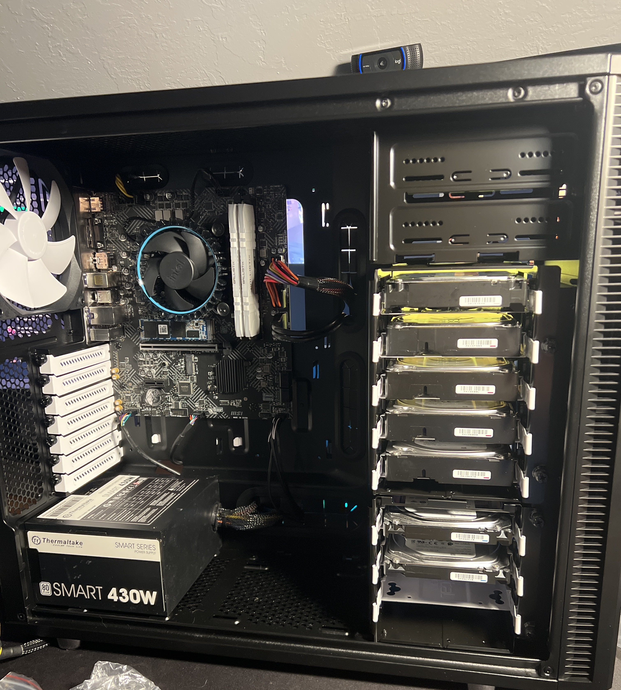
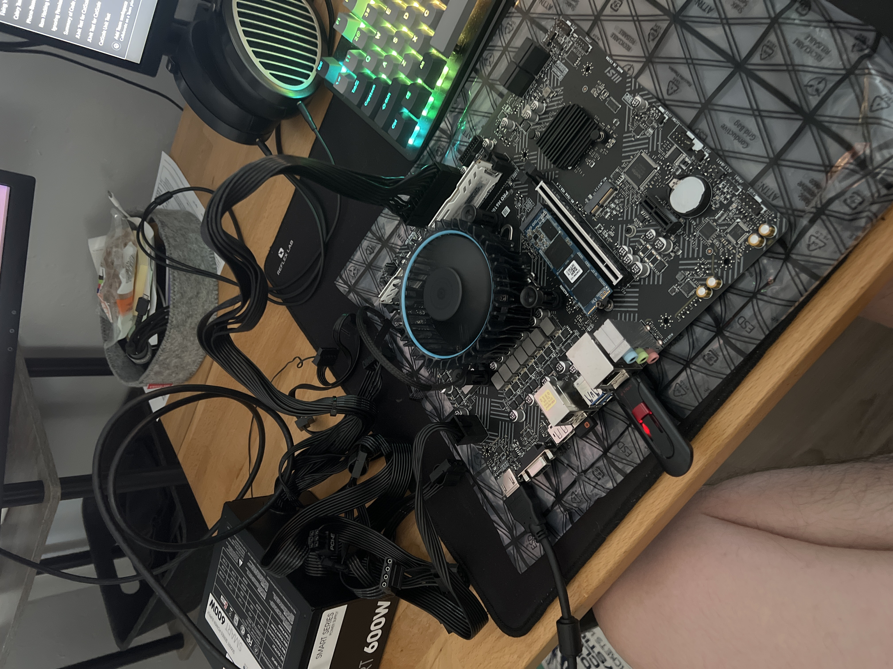

Home Server

I started building my home server a few years ago after going down a
rabbit hole of YouTube videos on self-hosting. At the time, I had
limited networking experience but was a longtime PC enthusiast with
spare parts sitting around. The idea of running my own services instead
of relying on cloud providers was too appealing to pass up, so I
repurposed an old build and started experimenting.
Setting up the first few applications required extensive research into
areas I had little prior exposure to. I had to learn how firewalls
actually work, how DNS resolution chains together, and how reverse
proxies sit in front of services to handle routing and SSL termination.
Every new application I wanted to run came with its own set of
troubleshooting challenges, from port conflicts to permission issues,
and each one taught me something new about how Linux systems and
networking actually operate under the hood.

As the number of applications grew, managing everything with bare-metal
installations became unsustainable. I taught myself Docker and migrated
my services into containers, which made deployment, updates, and
isolation dramatically easier. Security became a priority early on. I
set up reverse proxies to avoid exposing services directly, configured
fail2ban to block brute-force attempts, and developed a habit of
auditing access logs and hardening configurations as part of routine
maintenance.

Over time, friends and family started relying on the server for media
streaming and file sharing. That growing dependence pushed me to take
reliability and storage seriously. I upgraded to nearly 50TB of storage
with RAID redundancy to protect against drive failures. I also replaced
the power-hungry dedicated GPU with a CPU that has capable integrated
graphics, which cut the server's electricity consumption nearly in half
while still handling hardware transcoding for media streaming.
Today, my focus has shifted from just getting things running to
expanding capabilities, experimenting with new tools, and maintaining
long-term stability and security. The home server has become an ongoing
education in networking, system administration, security hardening, and
containerization. Every problem I solve on it deepens my understanding
of the infrastructure that underpins modern computing, and I continue to
treat it as both a practical tool and a hands-on learning environment.